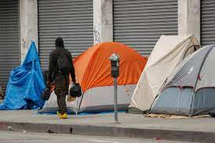
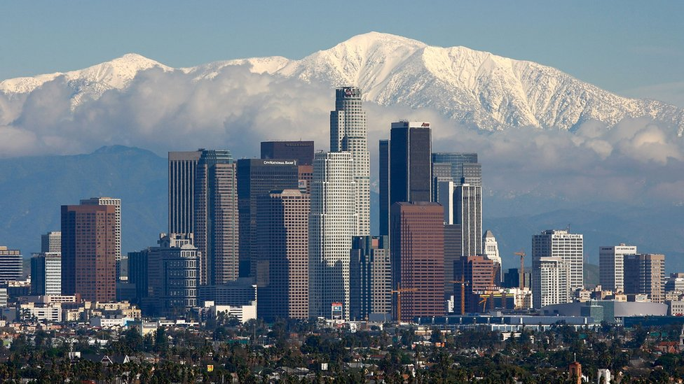
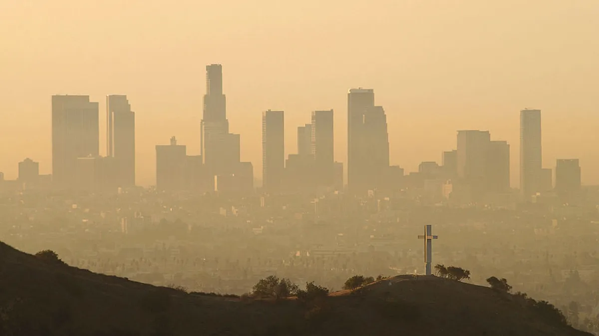

1. Tráfico y Transporte
Los Ángeles es famosa por sus atascos de tráfico, y el problema del transporte es una preocupación
constante para los residentes. La extensa ciudad, la dependencia del automóvil y la falta de opciones de
transporte público eficientes contribuyen a congestiones viales que pueden afectar significativamente la
movilidad y el tiempo de los habitantes.

2. Sin Techo y Vivienda Asequible
La crisis de personas sin hogar es uno de los problemas más apremiantes en Los Ángeles. A pesar de los
esfuerzos de la ciudad para abordar esta cuestión, el alto costo de la vivienda y la falta de recursos
para los desamparados siguen siendo obstáculos significativos. La falta de viviendas asequibles ha
llevado a un número alarmante de personas viviendo en las calles, parques y refugios temporales.

3. Desigualdad Socioeconómica
La brecha entre ricos y pobres es evidente en Los Ángeles. Aunque la ciudad es hogar de áreas prósperas,
también alberga vecindarios con altos niveles de pobreza. Esta disparidad se refleja en el acceso
desigual a servicios educativos, atención médica y oportunidades de empleo, lo que perpetúa la
desigualdad socioeconómica.

4. Contaminación del Aire y Calidad Ambiental
Los problemas ambientales, como la contaminación del aire, son una preocupación creciente en Los Ángeles.
La alta densidad de tráfico y la presencia de industrias pueden contribuir a la mala calidad del aire,
lo que tiene implicaciones directas para la salud de los residentes. El esfuerzo continuo por mejorar la
sostenibilidad y reducir las emisiones es esencial para abordar estos problemas.

5. Criminalidad y Seguridad
A pesar de los esfuerzos por mejorar la seguridad, Los Ángeles enfrenta desafíos persistentes en términos
de criminalidad en ciertas áreas. La delincuencia puede afectar negativamente la percepción de la
seguridad de los residentes y visitantes, influyendo en la calidad de vida y la vitalidad económica de
la ciudad.